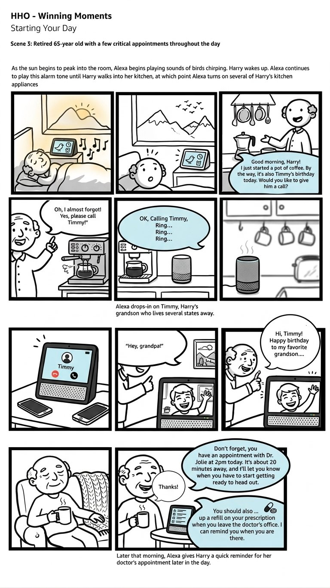
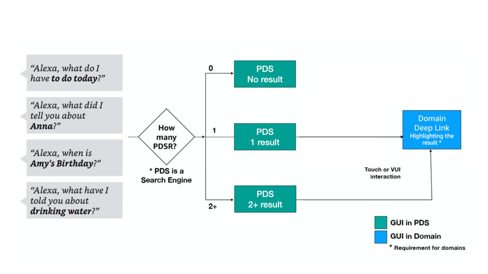
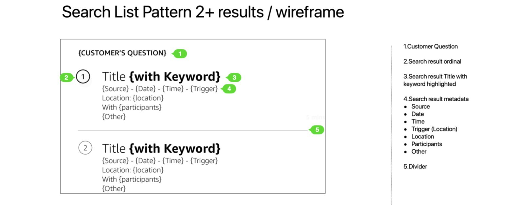
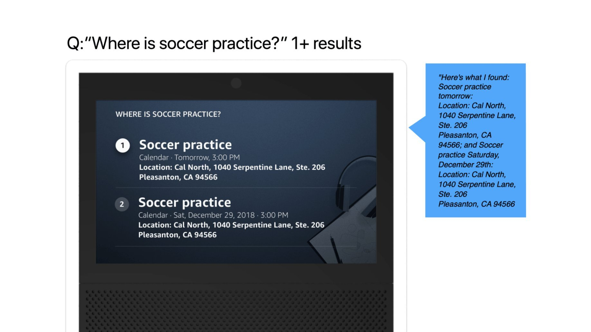
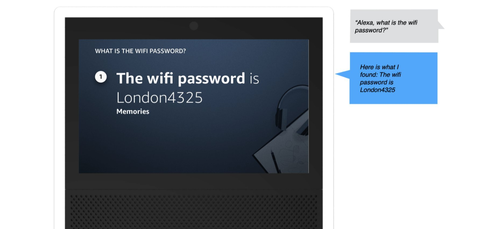
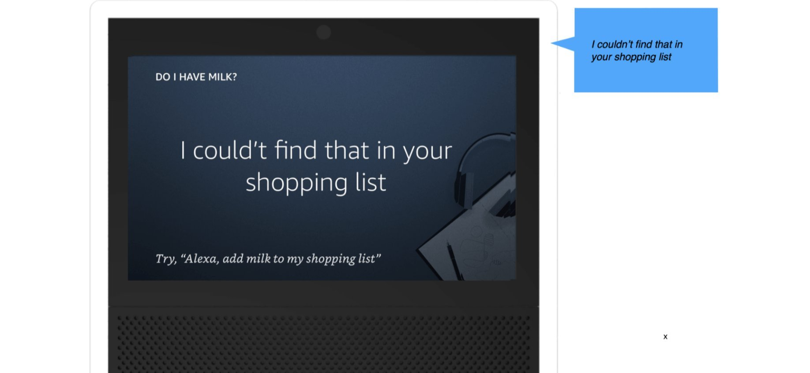
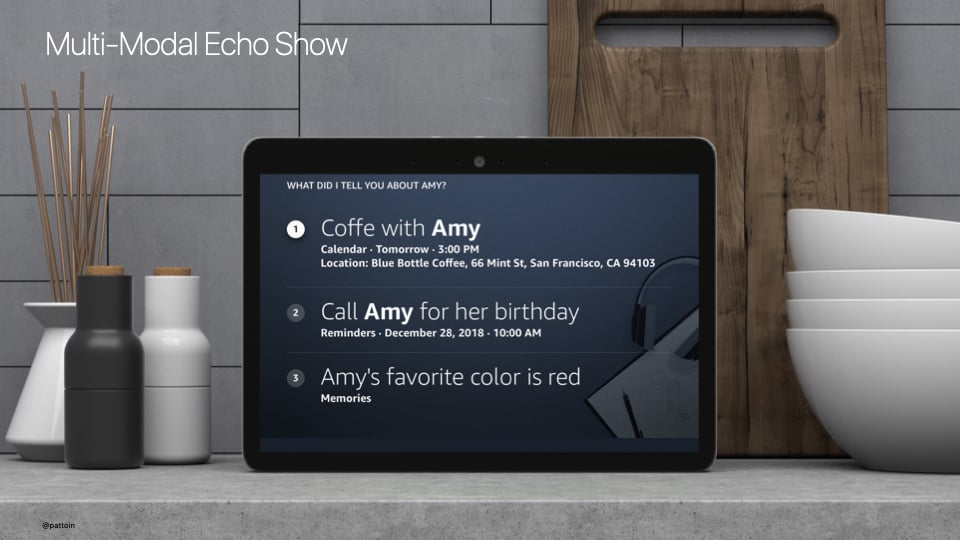
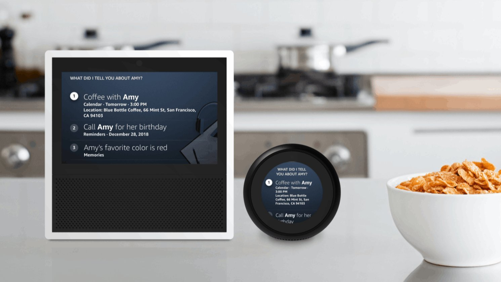

Overview
Alexa users had accumulated personal data across a growing number of domains — calendar events, reminders, lists, email, contacts, shopping orders. Each domain had its own skill, its own utterance pattern, its own mental model. To find something, you had to already know where it lived.
I was the lead UX designer for Alexa Personal Data Search (PDS) — a 0→1 feature. Research surfaced a clear frustration: users couldn't reliably distinguish between a calendar event and a reminder. They knew they had asked Alexa to remember something — they just couldn't remember what they called it. And Alexa had no way to help them find it across domains.
Alexa Personal Data Search was the answer: a unified, domain-agnostic search experience that let users find any personal information — regardless of where it was stored — with a single natural language query.
The Problem
Alexa's personal data lived in four completely separate silos. Each domain — Calendar, Reminders, To-Do Lists, Remember This — had its own search infrastructure, its own response vocabulary, and crucially, its own failure mode. Ask Alexa about a reminder and she'd search only reminders. Miss. Users blamed themselves.
"Users knew they had asked Alexa to remember something. They just couldn't remember what they called it — and Alexa had no way to help them find it."
Domain Blindness
Each domain operated in isolation. A reminder called "dentist appointment" was invisible to calendar queries. Users had no way to know the difference.
No Voice Search Precedent
Unlike web or app search, there was no established pattern for voice-first personal data retrieval. We were designing the grammar from scratch.
The Ordinals Problem
"What's on my grocery list?" — if there are 12 items, how does Alexa respond? Ranking by relevance didn't exist. Listing all wasn't feasible by voice.
Cross-Surface Consistency
Echo (voice-only), Alexa App (screen+voice), and Fire TV (large screen, lean-back) each needed their own response pattern for the same underlying data.
Research
Before designing any response, I worked with the HHO (Human + Human Output) team to map every real-world query pattern across the four domains. We categorized thousands of utterances into four question types — each with different user intent and different response needs.
Time of an event or appointment
Location of an event or stored item
A specific stored fact or detail
A person or contact attribute
Yes/no confirmation of something stored
Past or future relative to now
Source: Use Cases for Personal Data Search, HHO team. Production utterance research across Calendar, Reminders, To-Dos, and Remember This domains. Alexa responses shown are design-intent representations.
Domain Blindness
Users had no mental model of the four domains. They described their data by what it was, not which Alexa feature they'd used to store it.
Zero Results = Biggest Failure
Users consistently rated "I couldn't find that" as more frustrating than a partial result. Silence felt like a broken device, not a missing record.
Voice + Touch Switching
For list-heavy results, users naturally wanted to switch from voice to the Alexa App screen. Multimodal handoffs had to feel intentional, not punitive.
Ordinals Threshold
Users tolerated numbered results ("first, second, third") only when there were 3 or fewer. Beyond that, Alexa needed to offer a handoff to the app.
Building a Unified
Search Experience
"The real goal wasn't search. It was an assistant that already knew — and told you before you had to ask."
My approach was to design the interaction grammar first — the rules that would govern how results were spoken, how multiple results were navigated, and how zero results were handled — before touching visual design. The voice model had to be right before the screen layer could be built on top of it.

HHO Winning Moments — Starting Your Day · Scene 3 · North Star Storyboard
North StarA North Star scenario showing Alexa as a proactive presence — not waiting to be asked, but surfacing what matters at the right moment. Harry didn't search for Timmy's birthday. Alexa knew. PDS was the foundational capability that made this kind of proactive awareness possible.
Map All Personal Data Domains
Created a comprehensive inventory of every data type a user might want to find — calendar events, reminders, lists, email threads, contacts, shopping orders, notes. Mapped the mental models users had for each, and where those models overlapped or conflicted.
Define the Unified Query Model
Designed a cross-domain intent that could route a natural language query to multiple domains simultaneously and surface results in a coherent, ranked order — regardless of which domain contained the answer.
Prototype the Ordinals Debate
Built and tested multiple response patterns — with ordinals ("Your first result is…") and without. Used Keynote conversation prototypes and Adobe XD multimodal prototypes to test with real users on UserTesting.com. The ordinals finding became one of the most debated design decisions of the project.
Design 0 / 1 / 2+ Result Patterns
Designed distinct response patterns for zero results, one result, and multiple results — each requiring a different conversational shape, different visual treatment, and different recovery path for users.
Build the Unified Visual Model
Designed a "Personal Information" unified view for Echo Show — a single card-based display that could render results from any domain in a consistent format, with the source domain labeled but de-emphasized.
Redline to the Alexa Design System
Produced complete UX specs and redlines aligned to the Alexa Elements design system — ensuring engineering could implement quickly without ambiguity across all three surfaces.

PDS Decision Flow — 0 / 1 / 2+ results routing
Interaction ArchitecturePDS acts as a search engine. Depending on result count (0, 1, or 2+), the interaction forks into distinct response patterns. For 1+ results, users can deep-link into the originating domain via touch or voice.

Search List Pattern — 2+ results wireframe
UX SpecThe unified result card template — defined once, applied across all domains. The customer's question echoes back as the screen header. Keywords are bolded in results titles. Metadata surfaces source domain, date, time, location, and participants.
Response Patterns &
Golden Utterances
Three distinct response patterns were designed — for one result, multiple results, and zero results. Each required its own conversational shape and recovery path.

Response Pattern — Multiple results: "Where is soccer practice?"
Visual + Voice · Echo Show2 results: ordinals surface (1, 2) and Alexa reads both before pausing. The voice response mirrors the visual — same info hierarchy, same structure. The user can say "Go to result 2" or tap to deep-link.

Response Pattern — Single result: "What is the wifi password?"
Visual + Voice · Echo Show1 result: no ordinal needed. Alexa leads with the domain (Memories), states the answer directly, and offers a next step. Clean, no navigational overhead.

Response Pattern — Zero results: "Do I have milk?"
Visual + Voice · Echo Show0 results: Alexa names the domain she searched (shopping list), shifting blame from user to system. A constructive offer follows — never a dead end.
Single result — no ordinal needed. Alexa states the domain (calendar event), the content, and offers a natural exit or follow-up action.
3+ results — ordinals enable navigation. Alexa pauses after 2 results and asks to continue, preventing information overload.
Zero results — Alexa names the domains she searched (shifting blame from user to system), then offers a constructive next step rather than a dead end.
Voice Samples · On-device recordings
Designing for
the Unexpected
The core happy path was designed early. The harder work — and the work that most shaped the final system — was designing for what happened when things went wrong or got complicated. Two edge cases in particular required dedicated prototyping and testing cycles.
Response Pattern — No Memory found
Edge Case · Zero Result · Echo ShowThe zero-result state was one of the most consequential design decisions in the project. Research showed users blamed themselves when Alexa found nothing — not the system. The solution: Alexa explicitly names the domain she searched, shifting blame away from the user, then offers a constructive next step rather than a dead end.
A zero result is never the end of a conversation — it's an invitation to help the user do something. Every empty state in PDS was designed with a named domain + constructive offer, giving users a clear path forward regardless of what Alexa failed to find.
The Ordinals Debate
Should Alexa use ordinal numbers ("your first reminder is… your second is…") when listing multiple results? The answer shaped the entire multi-result experience.
This was one of the most debated design decisions on the team. Ordinals make it easier to track position in a list by voice — but they also feel robotic and create cognitive load. We ran structured testing to find the threshold.
Without ordinals, users lost track of position mid-list, especially for 3+ items. They couldn't tell when the list ended, or re-ask for "the second one."
Ordinals shipped conditionally — only for 3 or fewer results. Beyond that threshold, Alexa offers a handoff: "You have 8 items. I'll send them to your Alexa app."
Ordinals are a voice-only construct. On screen (Alexa App, Fire TV), they're irrelevant — the visual list handles navigation. The multi-surface constraint made ordinals a voice-specific solution, not a universal pattern.
Response Patterns
Every query produces one of three states. Each required its own response grammar — different for voice-only Echo vs. multimodal Alexa App vs. Fire TV lean-back. Here are the three canonical patterns.
Single results are conversational — no preamble, no count, just the answer. The domain tag (Calendar) is implicit in the response frame, not stated. Saying "In your Calendar..." adds friction without value when there's one clear answer.
Count comes first — users orient themselves before processing items. Ordinals only appear when count ≤ 3. At 4+ results, Alexa offers a screen handoff instead of an increasingly unwieldy list.
Alexa names the domains she searched. This was the most important zero-state decision. By naming where she looked, Alexa shifts blame from the user ("I must have forgotten to say it right") to the system ("nothing was found across these specific places"). It's an honesty signal that builds trust — and sets accurate expectations for the feature's scope.
Show & Echo Spot —
"What did I tell you about Amy?"

Multi-Modal Echo Show — unified PDS result across Calendar, Reminders, and Memories domains in a single scrollable list.

Both surfaces show the same unified PDS result. The Echo Show renders a scrollable list with domain labels. The Echo Spot adapts to a circular form factor, prioritising the first result and offering scroll for the rest.
What Shipped —
and What It Changed
Alexa Personal Data Search shipped in 2019, giving users the ability to find any personal information across domains with a single natural language query — without needing to know which domain it lived in.
The project established the cross-domain search interaction grammar for Alexa — response patterns, ordinal conventions, zero-result recovery paths — that subsequent personal information features were built on.
Most meaningfully, it shifted the mental model: Alexa was no longer a collection of separate skills. She was a unified assistant who knew you — and could help you find anything you'd ever asked her to remember.
The ordinals research became an internally referenced study within the HHO team — one of the few cases where a single interaction decision was tested, documented, and shared across multiple product teams as a design standard.
What I'd Do
Differently
I would push for longitudinal research on search behavior — not just what users searched for in testing sessions, but what they failed to find over weeks of real use. The zero-result pattern we designed was good, but the data to make it great would have come from real failure cases at scale.
I'd also advocate earlier for a proactive suggestion layer — rather than waiting for users to search, Alexa could surface relevant personal information before being asked. That vision was in the Connect north star document; Personal Data Search was the foundation it needed to exist.